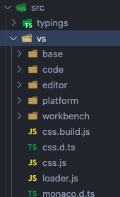
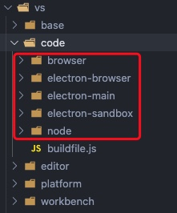

源码结构主要由内核及插件组成 ：
- core
- extensions

内核
主要分为以下几层：
base： 提供通用方法及 UI 相关内容platform：定义注入服务的机制及相关 service 实现editor：编辑器相关workbench：框架相关，如状态栏、菜单等

目标环境
内核中的每一层，都按目标运行环境划分：
- common ：只需要纯 JavaScript API
- browser ：需要浏览器 API 如 DOM
- node ：需要 nodejs API
- electron-main： 需要 Electron 主进程 API
- electron-browser：需要 Electron 渲染进程 API
- electron-sandbox：需要浏览器 API 并有一小部分与 Electron 主进程通信的 API

依赖注入
platform 里的代码是按“服务”的形式组织的，服务通过构造器注入来暴露给客户端。
服务的定义由两部分组成：
- 接口部分
- 标识符（装饰器，与接口同名）
class Client {constructor(@IModelService modelService: IModelService,@optional(IEditorService) editorService: IEditorService) {// use services}}
使用 instantiation 服务创建服务消费者的实例：instantiationService.createInstance(Client)
Contrib
约束:
- Contrib 目录下的所有代码不允许依赖任何本文件夹之外的文件
- Contrib 主要是使用 Core 暴露的一些扩展点来做事情
- 每一个 Contrib 如果要对外暴露，将API 在一个出口文件里面导出 eg: contrib/search/common/search.ts
- 一个 Contrib 如果要和另一个 Contrib 发生调用，不允许使用除了出口 API 文件之外的其它文件
- 接上一条，即使 Contrib 可以调用另一个 Contrib 的出口 API，也要审慎的考虑，应尽量避免两个 Contrib 互相依赖